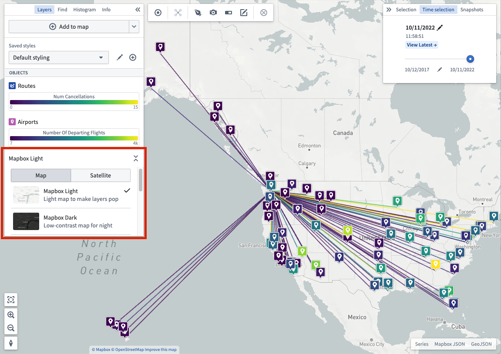

Core concepts
Layers
A layer is a collection of geographic data that are used to build a map. The Foundry Map application supports a variety of layers that can be combined to form powerful geospatial visualizations:
- Base layer: A base layer provides the foundation of a map by rendering geographic features of the world including roads, cities, borders, place names, and more. Available base layers include a light theme, a dark theme, and satellite imagery, amongst others. Change base layers by using the selector in the Layers panel.

You also have the option of using different types of layers as follows:
- Object layer: Use to leverage geospatial data on objects from your Ontology.
- Link layer: Show the relationships between objects after executing a Search Around.
- Overlay layer: Create high-quality visualizations using the Map Layer Editor just once for import into one or many maps.
- Annotation layer: Draw shapes that highlight and provide contextual information about specific areas of your map. Read more about creating annotations.
Object styling
The style you apply to your objects defines their appearance on a map.
Time selection
Every map has a selected time, which is always within the currently selected time window. The time window determines the period of time for which the map loads and shows time series data. Time-based styling can use the time selection to selectively control the opacity of objects with temporal data. Read more about manipulating time selection.